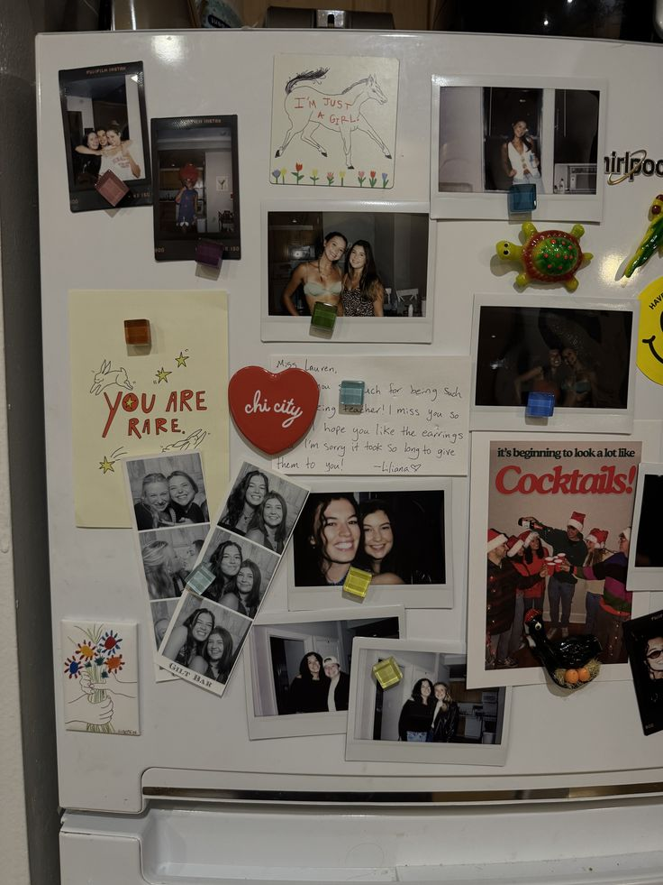

You slowly walk over to your kitchen, looking around for the non perishable items. You only find a can of peaches and
three canned soups but it will have to do. You look around at your kitchen maybe for the last time. The picture of your friend
and you layers the fridge, photos of you as chilren, teenagers and now adults. You wonder if you will ever see them again. You grab the food
and put it on the table
What now?